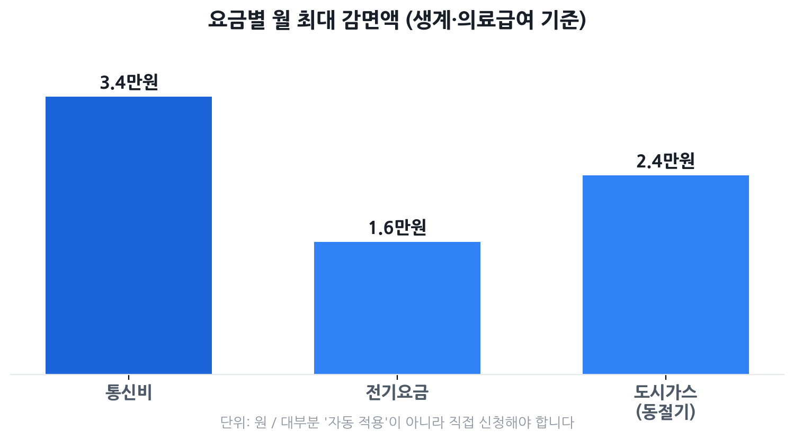

통신비·전기·가스 요금감면 2026
— 대상 자가진단과 신청법 완전 정리
기초생활수급자·차상위·장애인·국가유공자·다자녀 가구라면 통신비·전기·도시가스·TV수신료·에너지바우처까지 5가지 요금감면을 받을 수 있습니다. 핵심은 하나: 대부분 신청해야만 적용됩니다. 본인 자격을 모르거나 신청을 미루다 놓치는 금액이 연간 수십만 원에 달할 수 있어요.
- "내가 대상인지" 자가진단이 필요한 기초·차상위·장애·국가유공·다자녀 가구
- 요금감면이 자동인지, 신청해야 하는지 헷갈리는 분
- 통신비·전기·가스 감면을 한꺼번에 신청하는 방법이 궁금한 분
- 여러 감면이 중복 적용되는지 확인하고 싶은 분

내가 대상인가? — 자격 자가진단 체크리스트
아래 항목 중 하나라도 해당하면 이 글에서 다루는 감면 중 최소 1가지 이상을 받을 수 있습니다.
| 자격 유형 | 해당 여부 확인 방법 |
|---|---|
| 기초생활수급자 (생계·의료급여) | 읍·면·동 주민센터 수급자 증명서 / 복지로 확인 |
| 기초생활수급자 (주거·교육급여) | 동일. 급여 유형에 따라 감면액 차이 있음 |
| 차상위계층 (확인서 보유) | 주민센터 차상위계층 확인서 발급 |
| 장애인 (장애인복지법 등록) | 장애인등록증 또는 장애인증명서 |
| 국가유공자·보훈대상자 | 국가보훈처 보훈카드·확인서 |
| 다자녀 가구 (자녀 3인 이상) | 주민등록등본 상 만 18세 이하 자녀 3인 이상 |
| 기초연금 수급자 | 국민연금공단 수급 확인서 |
요금별 감면 현황 — 대상·금액 한눈에
① 통신비(이동통신 요금) 감면
과학기술정보통신부·방송통신위원회 고시에 따라 통신사가 의무 적용하는 감면입니다. 요금제 관계없이 이동전화 1회선에 적용되며, 신청 시 소득·자격 확인 후 당월 또는 익월부터 반영됩니다.
| 대상 | 감면 내용 | 월 최대 감면액 |
|---|---|---|
| 기초생활수급자 (생계·의료급여) | 기본료 26,000원 면제 + 통화료 50% 할인 | 약 33,500원 |
| 기초생활수급자 (주거·교육급여) / 차상위계층 | 기본료 11,000원 면제 + 통화료 35% 할인 | 약 21,500원 |
| 기초연금 수급자 | 월 청구액의 50% 할인 | 약 11,000원 |
| 장애인·국가유공자 | 기본료 및 통화료 35% 감면 | 요금의 35% |
② 전기요금 복지할인 (한전)
한국전력공사(한전)가 주택용·일반용 전기 사용 고객에게 적용하는 정액 할인입니다. 별도 신청을 하지 않으면 적용되지 않습니다.
| 대상 | 월 할인 한도 | 여름철(6~8월) |
|---|---|---|
| 기초생활수급자 (생계·의료급여), 장애의 정도가 심한 장애인, 국가유공자 1~3급 상이자 등 | 월 16,000원 | 월 20,000원 |
| 기초생활수급자 (주거·교육급여), 차상위계층 확인서 보유자 | 월 10,000원 | 월 12,000원 |
| 다자녀 가구 (자녀 3인 이상), 대가족(5인 이상), 출산 가구 | 전기요금의 30% (월 16,000원 한도) | 전기요금의 30% (월 16,000원 한도) |
③ 도시가스 요금 경감
도시가스사가 사회적 배려 대상자에게 적용하는 월정 경감 제도입니다. 동절기(12~3월)와 기타 월(4~11월) 감면액이 다릅니다.
| 대상 | 기타월(4~11월) | 동절기(12~3월) |
|---|---|---|
| 기초생활수급자 (생계·의료급여), 장애의 정도가 심한 장애인, 국가유공자 등 | 월 약 2,470~9,900원 | 월 최대 24,000원 |
| 차상위계층, 기초생활수급자 (주거·교육급여) | 월 약 2,470원 | 월 최대 약 12,000원 |
| 다자녀 가구 (자녀 3인 이상), 국가유공자 | 월 약 2,470원 | 월 최대 약 6,000~12,000원 |
구체적인 감면액은 지역 도시가스사마다 다를 수 있습니다. 한국도시가스협회(citygas.or.kr) 또는 본인 도시가스사 고객센터에서 정확한 금액을 확인하세요.
④ TV수신료(KBS) 면제
TV 수상기를 소지한 아래 대상자는 KBS 수신료(현행 월 2,500원)를 전액 면제받습니다.
- 기초생활수급자 (생계급여·의료급여 수급자)
- 시각·청각 장애인 (장애인복지법 등록자)
- 국가유공자 중 애국지사·전상군경·공상군경·4·19혁명부상자·공상공무원 및 국가사회발전 특별공로상이자
⑤ 에너지바우처
생계급여·의료급여 수급 가구이면서 가구원 중 노인(만 65세 이상), 영유아(만 6세 미만), 장애인, 임산부, 중증질환자, 한부모가족 구성원이 있는 경우 신청할 수 있습니다. 2026년부터 계절별 사용 한도 구분이 폐지되어 연간 지급액을 원하는 시기에 자유롭게 사용할 수 있게 됐습니다.
| 가구원 수 | 2026년 연간 지원액 |
|---|---|
| 1인 가구 | 295,200원 |
| 2인 가구 | 400,800원 |
| 3인 가구 | 566,700원 |
| 4인 이상 가구 | 701,300원 |
신청 기간: 2026년 6월 15일 ~ 12월 31일 / 사용 기간: 2026년 7월 1일 ~ 2027년 5월 31일
핵심: 자동 적용 vs 직접 신청 구분
요금감면을 못 받는 가장 흔한 이유는 하나입니다: "당연히 자동으로 될 줄 알았다." 복지 자격이 있어도 대부분 본인이 직접 신청해야만 적용됩니다.
| 감면 항목 | 자동 적용 여부 | 신청 필요 여부 |
|---|---|---|
| 통신비 감면 | ❌ 자동 아님 신청 필요 | 복지로·정부24 온라인 또는 통신사 대리점·주민센터 |
| 전기요금 복지할인 | ❌ 자동 아님 신청 필요 | 한전ON 온라인, 한전사업소, 주민센터, 정부24 일괄신청 |
| 도시가스 요금 경감 | ❌ 자동 아님 신청 필요 | 지역 도시가스사, 주민센터, 정부24 일괄신청 |
| TV수신료 면제 | ❌ 자동 아님 신청 필요 | 한전지사, KBS수신료콜센터(1588-1801), 주민센터 |
| 에너지바우처 | ❌ 자동 아님 신청 필요 | 복지로 온라인, 읍·면·동 행정복지센터 |
신청 방법 — 복지로·정부24·주민센터·각 기관
가장 빠른 방법: 정부24 요금감면 일괄신청
정부24(www.gov.kr)의 '요금감면 일괄신청' 서비스를 이용하면 전기요금·TV수신료·도시가스·지역난방 감면을 한 번에 신청할 수 있습니다. 공인인증서(또는 간편인증) 로그인 후 각 항목을 선택해 제출하면 됩니다.
통신비 감면 신청
- 온라인: 복지로(www.bokjiro.go.kr) 또는 정부24 › '이동통신요금감면' 검색
- 오프라인: 사용 중인 통신사(SKT·KT·LG U+·알뜰폰) 대리점 방문 또는 통신사 고객센터 ARS 1523
- 주민센터: 읍·면·동 행정복지센터 방문 신청도 가능
전기요금 복지할인 신청
- 온라인: 한전ON(online.kepco.co.kr) 로그인 후 복지할인 신청
- 전화: 한전 고객센터 123 (24시간)
- 방문: 한전지사·사업소 또는 읍·면·동 행정복지센터
도시가스 요금 경감 신청
- 온라인: 정부24 일괄신청 또는 지역 도시가스사 홈페이지
- 방문: 주소지 도시가스사 지사, 읍·면·동 행정복지센터
- 전화: 지역 도시가스사 고객센터 (도시가스 요금 청구서 뒷면 기재)
에너지바우처 신청
- 온라인: 복지로(www.bokjiro.go.kr) › '에너지바우처' 검색 후 신청
- 방문: 주민등록 주소지 읍·면·동 행정복지센터
중복 감면, 얼마나 받을 수 있나
여러 자격을 갖고 있거나 여러 요금 항목에 중복 적용되는 경우가 많습니다. 아래는 기초생활수급자(생계·의료급여) + 장애의 정도가 심한 장애인을 예시로 한 중복 적용 가능 금액입니다.
| 요금 항목 | 월 최대 감면액 | 중복 적용 가능 여부 |
|---|---|---|
| 통신비 감면 | 약 33,500원 | ✅ 가능 |
| 전기요금 복지할인 | 16,000원 (여름 20,000원) | ✅ 가능 |
| 도시가스 요금 경감 | 동절기 월 최대 24,000원 | ✅ 가능 |
| TV수신료 면제 | 2,500원 (전액 면제) | ✅ 가능 |
| 에너지바우처 (1인 가구) | 연 295,200원 (월 환산 약 24,600원) | ✅ 가능 (도시가스·전기와 중복 가능) |
위 모든 항목이 적용된다면 동절기 기준 월 약 10만 원 이상, 연간으로는 100만 원을 훌쩍 넘는 혜택이 됩니다. 요금 고지서를 한 번 꼼꼼히 살펴보는 것만으로도 연간 재정에 큰 차이를 만들 수 있습니다.
놓치기 쉬운 함정 5가지
- ① "자격이 있으면 자동으로 받는 줄 알았다." — 5가지 감면 항목 모두 직접 신청이 원칙입니다. 수급자로 등록됐다고 해서 자동으로 감면되지 않습니다.
- ② 통신사를 바꾼 뒤 감면이 끊겼다. — 번호이동·기기변경·요금제 변경 시 감면 설정이 초기화되는 경우가 있습니다. 변경 후 청구서를 반드시 확인하세요.
- ③ 도시가스 없는 가구는 도시가스 경감 대상이 아니다. — 연립주택·빌라 등 등유·LPG 사용 가구는 별도의 연료비 지원(에너지바우처)을 활용해야 합니다.
- ④ 다자녀 기준이 '만 18세 이하'다. — 자녀가 성년이 되면 다자녀 할인 기준에서 빠질 수 있습니다. 한전·도시가스사에 현행 적용 자녀 수를 주기적으로 확인하세요.
- ⑤ 에너지바우처를 신청하지 않으면 기한 내 소멸된다. — 에너지바우처는 신청 기간(6월 15일~12월 31일) 이내에 신청해야 하며, 신청을 놓치면 해당 연도 바우처는 받을 수 없습니다.
자주 묻는 질문
Q. 기초생활수급자인데 요금감면이 자동으로 적용되나요?
아니요, 대부분 직접 신청해야 합니다. 복지로·정부24 또는 주민센터에서 각 항목별로 신청해야 하며, 일부 지자체 연계 시스템에서만 자동 연결되는 경우가 있습니다. 신청 여부를 반드시 확인하세요.
Q. 통신비·전기·가스 감면을 한 번에 신청할 수 있나요?
정부24(www.gov.kr)의 '요금감면 일괄신청' 서비스를 이용하면 전기요금·TV수신료·도시가스·지역난방 감면을 동시에 신청할 수 있습니다. 통신비 감면은 별도로 복지로 또는 통신사를 통해 신청해야 합니다.
Q. 차상위계층이면 통신비 감면을 얼마나 받나요?
차상위계층(주거급여·교육급여 수급자 포함)은 이동통신 기본료 11,000원 면제에 통화료 35% 추가 할인으로 월 최대 21,500원까지 감면됩니다. 생계·의료급여 수급자는 월 최대 33,500원(기본감면 26,000원 + 통화료 50%)까지 받을 수 있습니다.
Q. 에너지바우처는 전기·가스 복지할인과 중복 수령이 되나요?
네. 에너지바우처는 전기요금 복지할인·도시가스 경감과 별도 제도이므로 중복 수혜가 가능합니다. 2026년부터는 계절 구분 없이 연간 지급액을 자유롭게 사용할 수 있게 변경됐습니다.
Q. 장애인인데 TV수신료 면제를 받으려면 어떻게 하나요?
시각·청각장애인이 전액 면제 대상입니다. 장애인등록증(또는 장애인증명서)과 전기요금 영수증을 지참해 주소지 관할 한전지사, KBS수신료콜센터(1588-1801), 또는 읍·면·동 주민센터를 방문해 신청하면 됩니다.
본 글은 과학기술정보통신부·방송통신위원회, 한국전력공사(한전), 한국도시가스협회, 보건복지부, 에너지바우처 공식 사이트(energyv.or.kr), 복지로(bokjiro.go.kr) 등 공공기관 자료를 바탕으로 2026년 6월 기준 작성됐습니다. 감면 금액·기준은 정부 고시·기관 정책에 따라 변동될 수 있으므로 신청 전 반드시 해당 기관 공식 채널에서 최신 내용을 확인하세요. 본 페이지는 정보 제공 목적이며 수혜를 보장하지 않습니다.